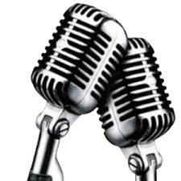

Rosa
kind, poetic, airhead, procrastinator
Friend of people
Lover of food, sleep, and reading
Who feels happy when sleeping, eating, and reading
Who fears heights, getting hurt and being scared
Who would like to see movies, the world end, and Bora, Bora
Resident of a corner on my bed in my room huddled in fetus formation.
Gomez
Dear Brother,
You are the one person who has tirelessly supported me through everything. You listen to what I have to say even if you're irritated and ready to tell me to be quiet for once in my life. But you never do. You are the only one who knows pretty much everything i've been through and has helped me through it all. One thing I love most about you though is how you still treat me like an adult and let me make my own decisions no matter how stupid they may be. You allow me to learn from my mistakes and yet are always there for me when I need a pick me up from being so stupid. I love you Brother so much and i'm going to miss you when you go off to college this fall.
Sincerely,
your Sister Rosa
The thing I feel most accomplished of from these past four years has been getting out of my shell. I'm amazed at how I have been able to become more outgoing and actually enjoy participating in things. Like the Lip Sync Battle and Poetry Slam. I can proudly say that I have finally come out of my shell and I don't feel as scared of talking to people I'm not close with. I hope to stay as much of an extrovert as I possibly can. Even though, there are times that I want to go back to my old ways and just be home all the time.
My first goal is to be able to have a succesful career. Right now I am aiming to be a math teacher here at the high school. But i'm not entirely decided on that because I also want to be a bank teller, a computer technician, and/or an accountant. For sure, though, I want to be settled with the career that I truly enjoy.
My second goal is to have fun. I don't want to have any children at this time because I want to be able to enjoy my young years and to be able to live with no regrets. I want to make plans to travel places and hope to have a fun and exciting life. Enough, that i'm going to be known as the cool aunt.
Ms. Caudle influenced me the most throughout my academic years because she is a very fun and wonderful teacher. She is always there for her students when they need her. She really has become like a mother to mostly all of us seniors. She taught me that not all teachers are just here to educate about books but also about life.
I don't really know what to share. I believe you are an amazing teacher and fun. All the teachers at this school are such loving people who truly care about our education and well being. Us, as students at Fowler High, have been very lucky to have such teachers that are a rarity in most other schools.